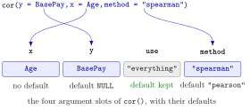

Function Arguments and Defaults¶
Definition¶
A function call f(value1, value2, name = value3) passes arguments to the function f. The function's definition lists its formal arguments, the names under which it expects its inputs, for example cor(x, y = NULL, use = "everything", method = c("pearson", "kendall", "spearman")).
- Matching by name: an argument written as
name = valuegoes to the formal argument with that name, wherever it stands in the call. - Matching by position: the remaining unnamed values are given to the remaining formal arguments in the order of the definition.
- A default value is written into the definition, as in
use = "everything"; it is used whenever the call does not supply that argument.
help(cor) or ?cor opens the help page, which shows the full list of arguments with their defaults and meaning; args(cor) prints only the argument list.
Interpretation¶
A function is a small machine with labelled input slots. The call fills the slots, either in the order in which they are listed or by naming them, and every slot that is left empty but has a default is filled with that default. This is why mean(x) works with a single input although mean() also accepts arguments for trimming and for missing values.

The figure matches a call to the four slots of cor(). The values are named, so their order in the call is irrelevant: y = BasePay goes to the slot y although it comes first. The slot method receives "spearman" and overrides its default, while use is not mentioned and keeps its default "everything". Written by position, cor(Age, BasePay) would give the same x and y, because they are the first two slots.
Positional calls are short and fine for the first one or two obvious arguments, such as the data in mean(x). Everything after that is clearer by name: seq(0, 1, by = 0.25) says what 0.25 means, whereas seq(0, 1, 0.25) relies on remembering that by is the third argument (sequences). The argument names also differ between functions with similar tasks: missing values are handled by na.rm = TRUE in mean() but by use = "complete.obs" in cor() (missing values). The help page is the place to check. Later in the course you will give your own functions defaults (default arguments in your own functions).
A common mistake is to pass values in the wrong order: log(100, 10) is , but log(10, 100) is . Both run without complaint. Naming the argument, log(100, base = 10), removes the doubt.
Key Results¶
- Named arguments are matched first, then the unnamed values fill the remaining formal arguments from left to right.
- With all arguments named, their order in the call does not matter:
cor(x = a, y = b)andcor(y = b, x = a)are the same call. - An argument with a default can be left out; an argument without a default must be supplied when the function needs it.
- When a default is a vector of choices, such as
method = c("pearson", "kendall", "spearman"), the first choice is used unless another is named. ?nameandhelp(name)open the help page;args(name)prints the argument list with defaults.
Examples¶
1. Position or name, same result. A small made-up sample of ages and base pays (in euros).
Age <- c(23, 37, 41, 29, 64, 52)
BasePay <- c(52000, 89000, 74000, 61000, 120000, 98000)
cor(Age, BasePay)
#> [1] 0.9592809
cor(x = Age, y = BasePay)
#> [1] 0.9592809
cor(y = BasePay, x = Age)
#> [1] 0.9592809
All three calls compute the Pearson correlation of Age and BasePay.
2. Overriding a default. method chooses the kind of correlation; its default is Pearson.
Age <- c(23, 37, 41, 29, 64, 52)
BasePay <- c(52000, 89000, 74000, 61000, 120000, 98000)
cor(Age, BasePay, method = "pearson")
#> [1] 0.9592809
cor(Age, BasePay, method = "spearman")
#> [1] 0.9428571
The first line repeats the default and gives the same value as Example 1. The Spearman correlation compares ranks instead of values; here only one pair of workers is ordered differently by age and by pay (the 41-year-old earns less than the 37-year-old), which gives .
3. Looking up the arguments. args() prints the definition line.
args(cor)
#> function (x, y = NULL, use = "everything", method = c("pearson",
#> "kendall", "spearman"))
#> NULL
args(round)
#> function (x, digits = 0)
#> NULL
cor() has four formal arguments, three of them with defaults; round() rounds to digits = 0 decimals unless told otherwise. The trailing NULL is just what args() returns after printing.
4. Pitfall: the order of positional arguments. Two calls that look alike.
log(100, 10)
#> [1] 2
log(10, 100)
#> [1] 0.5
log(100, base = 10)
#> [1] 2
round(3.14159, 2)
#> [1] 3.14
round(2, 3.14159)
#> [1] 2
The second argument of log() is the base and the second argument of round() is the number of digits. With swapped positions R still computes something, just not what was meant.
Prerequisites¶
Related Concepts¶
- Summary Statistics in R
- Missing Values
- Sequences with : and seq()
- Writing Functions
- Default Arguments in Your Own Functions
- Packages
Sources¶
- Programming for EOR · Week 2
- Lecture 2 script, Part 2 (Working with Data Frames, Built-in Functions, and Factors), sections Built-in Functions in R and Arguments
Aliases: arguments, named arguments, positional arguments, default values, formal arguments, args(), help(), ?cor, function signature Keywords: positional matching, matching by name, default argument values, help() and args()
Last updated: 10 November 2026 16:43
Function Arguments and DefaultsDefault Arguments in Your Own FunctionsThe r, d, p, q Distribution FunctionsPipe OperatorSummary Statistics in RWriting FunctionsFunction CallObject and AssignmentMissing ValuesSequences with : and seq()Packages